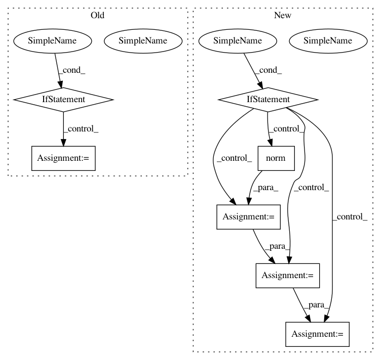

7a77233231c67038271c9945760b7a1d711b242d,pyroomacoustics/beamforming.py,Beamformer,steering_vector_2D_from_point,#Beamformer#Any#Any#Any#Any#,361
Before Change
X = source[:, np.newaxis]
// normalize for far-field if requested
if (ff):
X -= self.center
Xn = np.sqrt(np.sum(X**2, axis=0))
X *= constants.get("ffdist")/Xn
X += self.center
D = distance(self.R, X)
omega = 2 * np.pi * frequency
if attn:
After Change
omega = 2 * np.pi * frequency
// normalize for far-field if requested
if (ff):
// unit vectors pointing towards sources
p = (X - self.center)
p /= np.linalg.norm(p)
// The projected microphone distances on the unit vectors
D = np.dot(self.R.T, p)
// subtract minimum in each column
D -= np.min(D)
else:
D = distance(self.R, X)
phase = np.exp(-1j * omega * D / constants.get("c"))
if attn:
// TO DO 1: This will mean slightly different absolute value for
In pattern: SUPERPATTERN
Frequency: 3
Non-data size: 7
Instances
Project Name: LCAV/pyroomacoustics
Commit Name: 7a77233231c67038271c9945760b7a1d711b242d
Time: 2017-04-04
Author: fakufaku@gmail.com
File Name: pyroomacoustics/beamforming.py
Class Name: Beamformer
Method Name: steering_vector_2D_from_point
Project Name: tensorly/tensorly
Commit Name: 4d96f8c9a0c98df0a422cc498b86a6b5563f5b49
Time: 2020-08-06
Author: jean.kossaifi@gmail.com
File Name: tensorly/decomposition/candecomp_parafac.py
Class Name:
Method Name: parafac
Project Name: LCAV/pyroomacoustics
Commit Name: 5214393bb75498ded8fc140914edd79c1799af05
Time: 2017-04-04
Author: fakufaku@gmail.com
File Name: pyroomacoustics/beamforming.py
Class Name: Beamformer
Method Name: steering_vector_2D_from_point